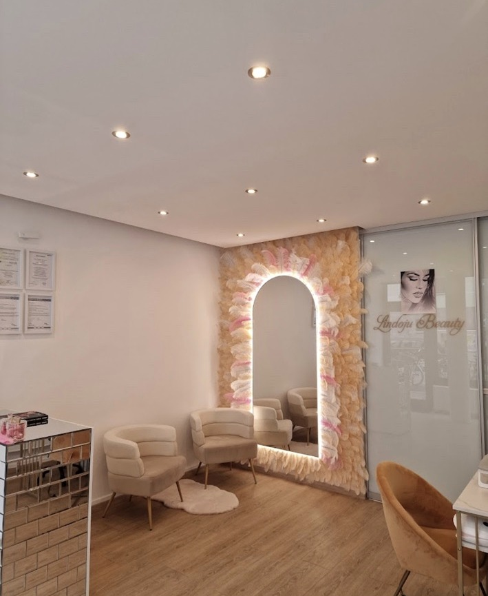

Korean Skin Care
Eine pflegende Gesichtsbehandlung mit Fokus auf Frische, Hautpflege und Wohlbefinden.
Lindoju Beauty · München
Korean Skin Care, Microneedling und persönliche Hautpflege – entdecke die Gesichtsbehandlungen bei Lindoju Beauty in München.
Von pflegenden Wohlfühlbehandlungen bis zur gezielteren Beauty-Anwendung: Hier findest du unsere Angebote, Preise und Kontaktmöglichkeiten.

Gesichtsbehandlung in München
Ob du dir eine pflegende Auszeit oder eine gezieltere Behandlung für dein Hautbild wünschst: Bei Lindoju Beauty findest du unterschiedliche Gesichtsbehandlungen in persönlicher Studio-Atmosphäre.
Eine pflegende Gesichtsbehandlung mit Fokus auf Frische, Hautpflege und Wohlbefinden.
Eine Behandlung zur Unterstützung eines gleichmäßigeren und gepflegteren Hautbildes. Ergebnisse können unterschiedlich ausfallen.
Du kannst dich vorab über die angebotenen Varianten informieren und Fragen zur Behandlung stellen.
Studio & Betreuung
Die Gesichtsbehandlungen finden im Beauty Studio von Lindoju Beauty in München statt. Die Auswahl richtet sich nach deinen persönlichen Vorstellungen und der jeweiligen Behandlung.
Bei empfindlicher Haut, aktiven Hautproblemen oder Unsicherheit über die Eignung von Microneedling ist eine vorherige fachliche Abklärung sinnvoll. Termine und konkrete Abläufe besprichst du mit dem Studio.

Preise · Gesichtsbehandlungen München
Drei Varianten stehen aktuell in der veröffentlichten Preisliste. Du kannst vor der Buchung fragen, welche Behandlung zu deinen Wünschen passt.
Alle Preise gemäß veröffentlichter Website-Preisliste. Bitte den aktuellen Preis und die Behandlungseignung vor dem Termin bestätigen.
Zur vollständigen PreisübersichtGut zu wissen
Korean Skin Care legt den Schwerpunkt auf eine pflegende Gesichtsbehandlung. Microneedling verfolgt einen anderen Behandlungsansatz zur Unterstützung des Hautbilds. Welche Variante geeignet ist, sollte individuell besprochen werden.
Die reguläre Korean-Skin-Care-Behandlung ist auf unserer Website mit 150 € angegeben. Die Variante mit Massage und Pflegesöckchen kostet laut Preisliste 200 €.
Für Microneedling ist derzeit ein Preis von 100 € auf der Website angegeben. Bitte bestätige den aktuellen Preis bei deiner Terminanfrage.
Du kannst Lindoju Beauty telefonisch unter +49 1523 7687835 oder per WhatsApp kontaktieren. Das Studio befindet sich in der Corneliusstraße 38, 80469 München.
Weitere Angebote
Dein Termin in München
Wir helfen dir gerne bei der Auswahl einer passenden Behandlung und bei deiner Terminanfrage. Du erreichst uns direkt telefonisch oder per WhatsApp.